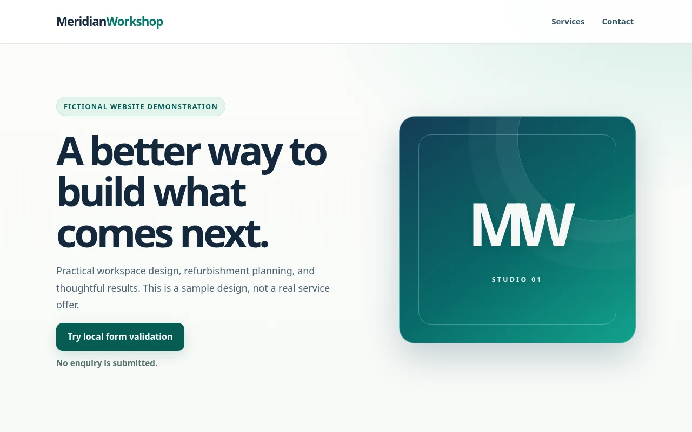
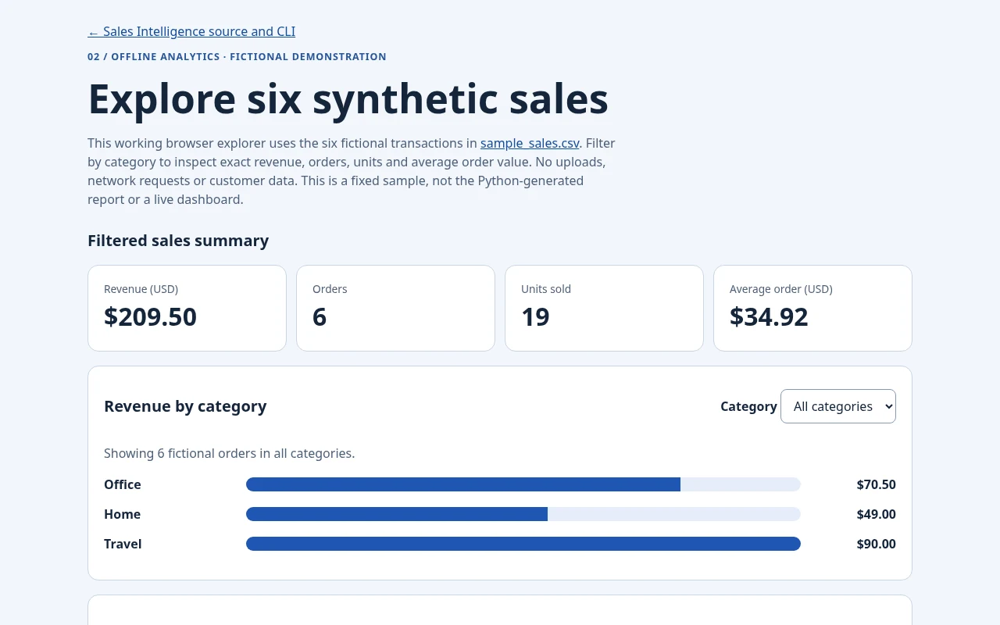
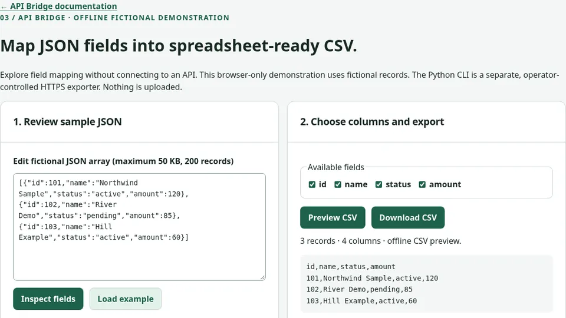
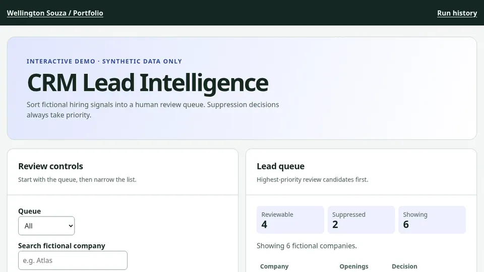
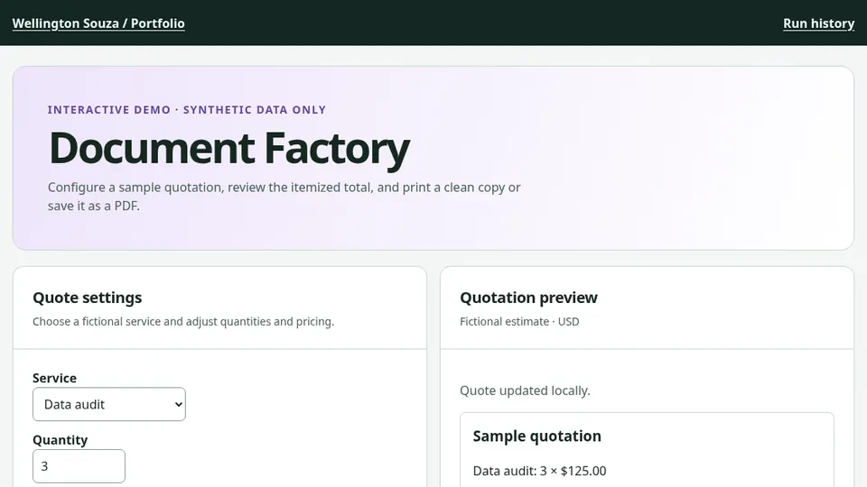
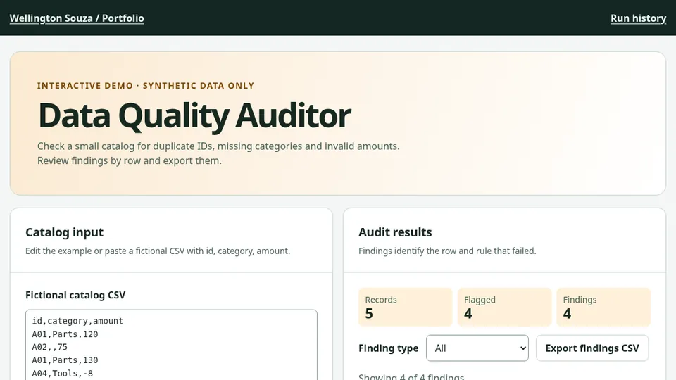
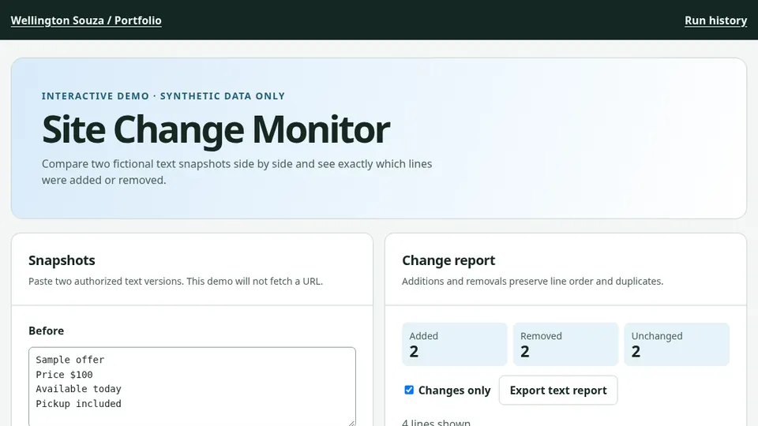
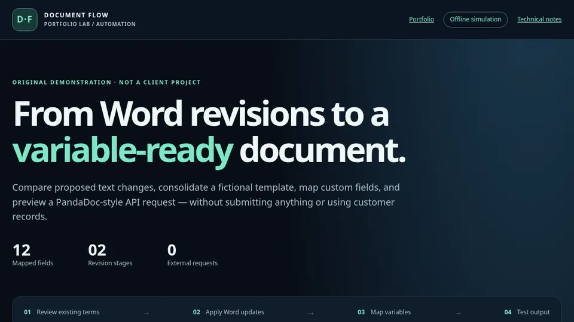
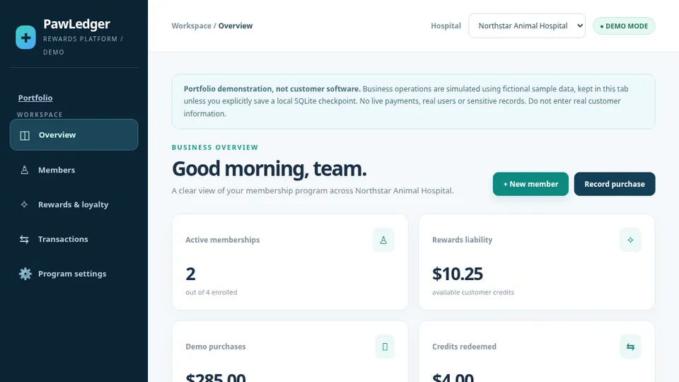

01 / Data cleanup
Excel Rescue
Clean a messy CSV and see exactly why each record was kept or rejected. Try the sample in one click or use a fictional CSV of your own.
Browser demo · local processing
Freelance portfolio
See how I build a service page, turn sales exports into a dashboard and make messy spreadsheets easier to trust.
Explore the demosStart here: three hands-on demos, no sign-in.
Clean a messy CSV and see exactly why each record was kept or rejected. Try the sample in one click or use a fictional CSV of your own.
Browser demo · local processing

A responsive service page for a fictional workspace studio, from the first impression to a contact form with clear feedback.
Prototype · form does not send

Filter a fictional sales dataset and see revenue, order counts and transaction details update together.
Browser demo · fixed sample data
From API mapping and document automation to a two-clinic dashboard.

Turn JSON into a CSV by selecting fields, previewing the rows and exporting the final file.

Filter fictional leads and see why each company goes to human review or is suppressed. Nothing is sent.

Configure a service, price and discount. Review the line item and print a clean sample quotation.

Find duplicates, missing categories and invalid amounts in a catalog CSV. Filter and export the findings.

Compare two text snapshots. Review additions and deletions by line, without connecting to any website.

Review Word-style edits, fill 12 variables and download a sample PandaDoc-style request. No live integration.

Run a fictional rewards program across two hospitals, including simulated purchases, redemptions and a local checkpoint.
Process
Define the outcome and how we’ll verify it.
Build the smallest version that solves the problem.
Test the main flow, edge cases and limits.
Deliver maintainable files and clear instructions.